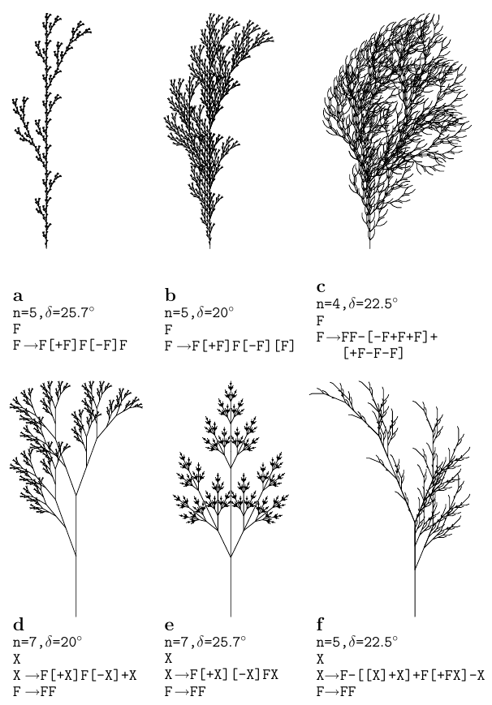

Salvi Péter, 2021
Ebben a dokumentumban megpróbáltam összeszedni néhány (szerintem) izgalmas témát a formális nyelvek és automaták területéről, az ezzel általában együtt járó technikai jelölések mellőzésével.
Bizonyos növények fejlődését modellezni lehet egy nyelvtan segítségével, ami egy kezdeti “rügyből” kiindulva azt lépésenként növeszti, amíg el nem éri végső állapotát. Az alkotóelemeket egy ábécé betűivel jelölhetjük, a lépéseink pedig mindig abból állnak, hogy egy vagy több szimbólumot adott szabályok szerint másokra cserélünk.
Egy ilyen rendszert generatív nyelvtannak neveznek, és az általa képezhető szavak összessége pedig a nyelvtan által generált nyelv. Az ábécében levő szimbólumokat két csoportra osztjuk, terminálisokra és nemterminálisokra; ez utóbbiba tartozik a kezdő szimbólum is.
Nézzünk egy példát! Legyen n a kezdő (nemterminális) szimbólum, 0 és 1 pedig a terminálisok. A szabályok legyenek a következők:
1. n -> 0n0
2. n -> 1n1
3. n -> 0
4. n -> 1
5. n -> ∅Ezek alapján például le tudjuk generálni az 11011011 szót:
n --2-> 1n1 --2-> 11n11 --1-> 110n011 --2-> 1101n1011 --5-> 11011011Az utolsó lépésben az n eltűnik, és innentől már nincs több alkalmazható szabály. Könnyen látható, hogy ezekkel a szabályokkal az összes 0 és 1 számokból álló palindróma (oda-vissza ugyanolyan szó) írható le.
A szabályokra különféle megkötéseket lehet tenni, amelyek segítségével a generált nyelveknek egy hierarchiáját építhetjük fel.
A szabályok két fajtája megengedett:
1. x -> yX
2. x -> XItt x és y nemterminális szimbólumok, X pedig terminálisok (akár üres) sorozata. Például ha a fenti példában szereplő szimbólumokhoz még hozzátesszük a nemterminális a-t, az
1. n -> a01
2. a -> a001
3. a -> 01szabályok segítségével legenerálhatóak a 0101, 0100101, 0100100101, .., 01(001)*01 szavak, ahol a csillag a zárójeles kifejezés tetszőleges számú ismétlését jelzi, pl.:
n --1-> a01 --2-> a00101 --2-> a00100101 --3-> 0100100101Legyen minden szabály x -> X alakú, ahol x nemterminális szimbólum, X pedig tetszőleges szó, tehát vegyesen lehetnek benne terminálisok és nemterminálisok (X lehet üres is). Ez nyilván a szabályoknak egy tágabb halmaza; a fenti palindrómás példa is ide tartozik.
Legyen minden szabály XyZ -> XYZ alakú, ahol y nemterminális szimbólum, X, Y és Z pedig tetszőleges szó. X és Z lehet üres is, viszont Y csak akkor, ha X és Z is az (tehát ha a szabály y -> ∅ alakú), és y nem szerepel egy szabály jobboldalán sem.
Ez a nyelvek legtágabb osztálya: a szabályokra nincsenek megkötések, tetszőleges két szó közti átmenet megengedett.
Visszatérve a növények modellezésére, a Lindenmayer- vagy L-rendszerek olyan környezetfüggetlen nyelvtanok, amelyeknek a szabályai közt nincs két azonos baloldalú. A generálás folyamata kissé eltér a fent leírttól: minden egyes iterációban az összes szabályt egyszerre, minden lehetséges helyen alkalmazzuk. Például az eredeti, algák növekedésére készített rendszer
a -> ab
b -> avolt, ahol a a kezdő szimbólum. Az iterációk során tehát így változik:
0. a
1. ab
2. aba
3. abaab
4. abaababa
5. abaababaabaab
6. abaababaabaababaababa
...Ezt a logikát egyszerű grafikai értelmezéssel kombinálva nagyon szép fraktálokat, páfrányokat és fákat lehet generálni. A Sierpiński-háromszög készítéséhez pl. a következő szabályok alkalmazhatóak:
a -> f-g-g
f -> f-g+f+g-f
g -> ggJelentse itt az f és g egyaránt azt, hogy az aktuális irányban egységnyi vonalat húzunk, a - és + pedig hogy jobbra ill. balra fordulunk 120 fokot.
Az alábbi Prolog program kiszámolja az n-edik iteráció eredményét, és kiírja a megfelelő Logo programot:
lindenmayer(0, X) :- prologue, maplist(paint, X).
lindenmayer(N, X) :- N > 0, N1 is N - 1, iterate(X, X1), lindenmayer(N1, X1).
iterate([], []).
iterate([X|Xs], Z) :-
rule(X, Y), string_chars(Y, Y1),
iterate(Xs, Ys), append(Y1, Ys, Z).
iterate([X|Xs], Z) :-
\+ rule(X, _),
iterate(Xs, Ys), append([X], Ys, Z).
prologue :-
write('clearscreen'), nl,
write('make "size 10'), nl,
write('make "angle 120'), nl.
paint(f) :- write('forward :size'), nl.
paint(g) :- write('forward :size'), nl.
paint(-) :- write('right :angle'), nl.
paint(+) :- write('left :angle'), nl.
rule(a, 'f-g-g').
rule(f, 'f-g+f+g-f').
rule(g, 'gg').Példa a program kimenetére:
?- lindenmayer(2, [a]).
clearscreen
make "size 10
make "angle 120
forward :size
right :angle
forward :size
left :angle
forward :size
left :angle
forward :size
right :angle
forward :size
right :angle
forward :size
forward :size
right :angle
forward :size
forward :size7-8 iteráció után már elég szép ábrát kapunk.

[ és ] rendre a rajzolási állapot (pozíció, irány) verembe mentését és onnan visszatöltését jelentik; Logoban ezeknek a push "s pos push "s heading ill. penup setheading pop "s setpos pop "s pendown parancssorozatok felelnek meg, ahol s egy kezdetben üres lista, amit a make "s [] paranccsal készíthetünk el. Az X-nek a rajzolásban nincsen szerepe.Egy nagyon izgalmas eredmény, hogy a fent bemutatott ún. Chomsky-hierarchia egyes nyelvosztályaihoz tartozik egy-egy állapotgép, ami a nyelv által generált szavakat ismeri fel.
A legegyszerűbb ilyen gép a véges automata. Ezt úgy lehet elképzelni, mint egy dobozt, amibe be tudunk dugni egy szalagot, amin szimbólumok sorozata van, és a gép ezt balról jobbra tudja olvasni. A gépen van ezenkívül egy lámpa, ami kijelzi, hogy a gép elfogadta-e (felismerte-e) a szalagon levő szót.
A gép véges sok állapotban lehet, ezek közül egy kitüntetett állapot a kezdőállapot, és lehet egy vagy több végállapota. Ha a szó végigolvasásakor végállapotba kerül, a szót elfogadja, egyébként nem. A gép működését állapotátmenetek határozzák meg, amelyek mindig az aktuális állapottól, és az olvasó fej által éppen érzékelt szimbólumtól függnek. A gép determinisztikus, tehát egy adott állapotban egy bizonyos szimbólumra csak egy állapotátmenetet engedünk meg.
Ez a gép reguláris kifejezéseket képes felismerni, tehát olyan szavakat, amelyeknek részeit iterálhatjuk (*) vagy választhatunk közülük (+), pl. van olyan véges automata, ami a 0(01+110)*1 nyelvet ismeri fel, így pl. a 01, 0011, 01101, 001011, 0011101 stb. szavakat. Az automata így néz ki:
+---<---+----<----+
| | |
| 1 |
v | 0
[A] --0-> B --0-> C |
| |
+---1-> (D) --1-> EItt az [A] a kezdő-, és a (D) a végállapot.
Könnyen belátható, hogy a véges automaták és a reguláris generatív nyelvtanok kölcsönösen megfeleltethetőek egymásnak.
Egy érdekes tétel a “pumpa-lemma”. Ez azt mondja ki, hogy egy n állapotból álló véges automatánál minden legalább n hosszú W szó felosztható W = XYZ alakban úgy, hogy XY hossza legfejlebb n, Y nem üres, és az Y többszöri alkalmazásával kapott XYYZ, XYYYZ stb. szavak szintén benne vannak a nyelvben. Az alapgondolat az, hogy ha egy szó legalább n hosszú, akkor az elfogadásakor át kell, hogy menjen egy hurkon, és a hurok tetszőlegesen ismételhető.
A fenti példában 5 állapot van (A-E), tehát ha veszünk egy legalább 5 hosszú szót a generált nyelvből, pl. a 01101-et, ez garantáltan átmegy egy hurkon - és tényleg, a B-D-E hurkon. Ha tehát X = 0, Y = 110, Z = 1-et választunk, az XYY..Z tényleg benne lesz a nyelvben.
Ebből következik, hogy pl. a palindrómák felismerésére a véges automaták nem alkalmasak. Vegyük azt az a..aba..a alakú palindrómát, aminek az elején és végén is n darab a áll. Ez tehát hosszabb, mint n, következésképp kéne, hogy létezzen a fent leírt felbontás. Viszont XY hossza legfeljebb n lehet, tehát csak a-kból állhat, így Y ismétlése után csak a kezdő a-k száma fog nőni, és nem lesz többé palindróma, ellentmondásra jutottunk.
Az előbbi gépünkhöz adjunk hozzá egy újabb szalagot, ami kezdetben üres, és az egyik irányban végtelen. Ezen a szalagon a gép két műveletet tud végezni:
push: jobbra mozgatja, és ráír egy szimbólumotpop: törli az aktuális szimbólumot, és balra mozgatjaAz állapotátmenetek a két szalagon látott szimbólumok alapján történnek, és lehetnek nemdeterminisztikusak is, tehát azonos állapot+szimbólumpárhoz több átmenet is tartozhat, de egy adott szó felismerésekor a gépről feltételezzük, hogy mindig a “megfelelő” lehetőséget választja.
A gép a nevét arról kapta, hogy a plusz szalag felfogható úgy, mint egy verem, ahova felülről be tudunk dobni újabb és újabb szimbólumokat (push), amelyekből mindig csak a legfelső látszik, majd ha már nem kell, a legfelsőt kidobjuk (pop), és ezáltal az alatta levő láthatóvá válik.
Bizonyítható, hogy az egy ilyen gép által felismerhető nyelvek éppen a környezetfüggetlenek lesznek.
Egy nyelv tartalmazza az a..b.. szavakat, ahol az a-k és b-k száma azonos. Mutasd meg, hogy ezt véges automatával nem lehet leírni, és írj veremautomatát, ami csak ennek a nyelvnek a szavait fogadja el!
Egy nyelv tartalmazza a 0..1..0..1.. alakú szavakat, ahol vagy a két 0-s csoport, vagy a két 1-es csoport hossza azonos, tehát ide tartozik a 000110001 és a 0110011 is. Írd le ezt a nyelvet nemdeterminisztikus veremautomatával!
Itt most megint csak egy szalagunk van, de az hosszú, jobbra-balra mozgatható, és írni is lehet rá. (A szalagon elhelyezett vizsgált szót speciális szimbólumokkal határoljuk el.) Annyi megkötés van még, hogy a szalag hossza a bemeneti szó hosszának legfeljebb csak valamilyen fix k-szorosa lehet.
Egy állapotátmenet itt már nem csak azt mondja meg, hogy adott állapotban ha egy bizonyos szimbólumot látunk, akkor milyen állapotba váltsunk, hanem azt is, hogy a látott szimbólum helyére mit írjunk, és a szalagot melyik irányba mozgassuk, pl.:
start/1 => next/0, right.Tehát a start állapotban ha 1-est látunk, akkor a next állapotba váltunk, 0-t írunk, és a szalagot jobbra mozgatjuk.
Ha megengedünk nemdeterminisztikus átmeneteket, ez a gép pontosan a környezetfüggő nyelvtanoknak felel meg. Az viszont még nem ismert, hogy minden környezetfüggő nyelvtan leírható-e a determinisztikus variánssal.
Egy nyelv tartalmazza az a..b..c.. szavakat, ahol az a-k, b-k és c-k száma azonos. Mutasd meg, hogy ezt veremautomatával nem lehet leírni, és írj lineárisan korlátolt automatát, ami pontosan ennek a nyelvnek a szavait fogadja el!
Végül a Turing-gépnél feloldjuk a lineáris korlátot is, és azt mondjuk, hogy a szalag legyen végtelen hosszú. Létezik nemdeterminisztikus és/vagy többszalagos változata, de ezek is ugyanazokat a nyelveket képesek felismerni - a rekurzívan felsorolhatóakat. (Sőt, a szalag elég, ha az egyik irányban végtelen.)
A Turing-gépek használhatóak függvények kiszámítására is: a szalagon kezdetben adottak a függvény paraméterei, és a gép leállásakor a szalagon található az eredmény (konvenció szerint az olvasófejtől balra).
A számításelmélet talán legfontosabb tétele a Church-Turing tézis, miszerint a Turing-gépek, a rekurzív függvények, a lambda-kalkulus, és a számítógépes (nem interaktív) programok mind azonos “erősségűek”, ugyanazokra a számításokra képesek.
Ennek egy következménye, hogy ha egy programozási nyelvben lehet szimulálni egy Turing-gép működését, akkor (számításelméleti szempontból) éppen olyan jó, mint bármely másik nyelv. Természetesen ettől egy programnyelv még nem lesz kényelmesen használható - erre utal a “Turing-kátránygödör” (Turing tar-pit) kifejezés, amibe olyan nyelvek tartoznak, mint a Brainfuck, a Whitespace vagy az Unlambda (ez utóbbi a lambda-kalkulussal egyenértékű kombinatorikus logikán alapul, úgyhogy a Church-Turing tézis közvetlenül alkalmazható).
Írjunk Turing-gépet Prologban! Ahogy általában a Turing-gép, mint programozási nyelv tárgyalásánál szokás, a szalagra írható szimbólumok legyenek a 0 és az 1.
Programozási szempontból a végtelen szalag reprezentációja egy érdekes kérdés. Tároljuk külön az olvasófejtől balra és jobbra levő részt, méghozzá a baloldalit megfordítva! A szalag tehát Left-[X|Right] alakú lesz, ahol Left a balra levő szimbólumok listája (a lista feje a közvetlenül balra levő szimbólum), X az olvasófej alatti szimbólum, Right pedig a jobbra levő szimbólumok listája. Ugyan ez még mindig véges, de tudjuk szimulálni a végtelenséget: szükség esetén 0-kkal egészítjük ki. A balra és jobbra mozgatás szabálya tehát:
move([]-B, left, []-[0|B]).
move([X|A]-B, left, A-[X|B]).
move(A-[X], right, [X|A]-[0]).
move(A-[X,Y|B], right, [X|A]-[Y|B]).A szabályokat az => operátor segítségével adjuk meg úgy, ahogy a lineárisan korlátolt automatáknál láttuk.
:- op(1100, xfx, =>).A gép “futtatása” ezután már könnyen megfogalmazható:
run(Tape, stop, Tape).
run(Left-[X|Right], State, Result) :-
write_state(Left, X, Right, State),
(State/X => State1/Y, Movement),
move(Left-[Y|Right], Movement, Tape),
run(Tape, State1, Result).A stop a végállapot; a write_state kiírja minden lépés után az aktuális állapotot és a szalag tartalmát, és megmutatja a fej pozícióját:
write_state(Left, X, Right, State) :-
reverse(Left, Left1), append(Left1, [X|Right], Tape),
write(Tape), tab(3), write(State), nl,
length(Left, N), N1 is N * 2 + 1,
tab(N1), write('^'), nl.Végül a legfelső szinten csak a szalagot adjuk meg, és visszakapjuk a (fejtől balra levő) eredményt:
turing(Tape, Result) :- run([]-Tape, start, Left-_), reverse(Left, Result).(A start a kezdőállapot.)
Példaként itt egy program, ami összead két számot. A számok unárisan vannak megadva (annyi darab 1-es, amennyi a szám értéke), és egy 0-val vannak elválasztva. A program annyit csinál, hogy a köztük levő 0-t 1-re cseréli, és utána a második szám végére érve az utolsó 1-est 0-ra cseréli.
start/0 => next/1, right. % megkeressük a két szám közti `0`-t,
start/1 => start/1, right. % és `1`-re cseréljük
next/0 => dec/0, left. % megkeressük a második szám végét
next/1 => next/1, right.
dec/1 => stop/0, right. % az utolsó `1`-est `0`-ra cseréljükPéldául 2 + 3 kiszámítása:
?- turing([1,1,0,1,1,1], X).
[1,1,0,1,1,1] start
^
[1,1,0,1,1,1] start
^
[1,1,0,1,1,1] start
^
[1,1,1,1,1,1] next
^
[1,1,1,1,1,1] next
^
[1,1,1,1,1,1] next
^
[1,1,1,1,1,1,0] next
^
[1,1,1,1,1,1,0] dec
^
X = [1, 1, 1, 1, 1, 0] Lehet készíteni univerzális Turing-gépet is, ami egy Turing-gép specifikációja és egy bemeneti szalag alapján kiszámolja, hogy a megadott Turing-gép a megadott adatra mit adna.
De mit jelent az, hogy egy Turing-gép specifikációja? Ezt úgy kell elképzelni, hogy a Turing-gép programját egy számmá alakítjuk valamilyen megadott módon. Az egyes állapotokat számokkal jelölhetjük - a start lehet az 1-es, a stop a 0-s, a többi pedig 2-től felfele. Minden állapothoz felsoroljuk, hogy mit csinál 0-ra és mit 1-re. Ekkor a fenti összeadó program így néz ki:
21R11R30L21R00R00REbből az első 21R azt jelenti, hogy (1-es állapotban olvasott 0 esetén) a 2-es állapotba kell menni, 1-et kell írni, és utána jobbra kell mozgatni a szalagot; a következő 11R jelentése az, hogy (1-es állapotban olvasott 1 esetén) 1-es állapotban maradunk és 1-est hagyunk a szalagon, majd azt jobbra mozgatjuk stb. Mivel a dec (3-as) állapothoz nem volt definiálva, mit csináljon 0 esetén, azt is 00R-el (tehát stop/0, right-al) töltöttük ki.
Most már csak annyi van hátra hogy ezt át kell váltani 0-k és 1-esek sorozatára. Ehhez a számokat unárisba váltjuk, majd ezután a következő módon kódoljuk:
0 => 0
10 => 1
110 => R
1110 => LA fenti program tehát erre alakul át:
1010101101010110101010011101010101100011000110Ellenőrzésként próbáljuk dekódolni:
1010101101010110101010011101010101100011000110
1 1 1 R 1 1 R 1 1 1 0L 1 1 1 R 00R 00R
2 1 R 1 1 R 3 0L 2 1 R 00R 00RAz így kiszámolt kódot tekinthetjük egy 2-es számrendszerű számnak, aminek az unáris megfelelőjét át tudjuk adni egy Turing-gép bemeneteként. Ilyen értelemben a legkisebb kódú Turing-gép a 6-os, tehát binárisan 00110-s, ami dekódolva
start/0 => stop/0, right.Mi a 10 legkisebb kódú Turing-gép? Mit csinálnak?
Bonyolultabb programra példa Euklidész algoritmusa két szám (a és b) legnagyobb közös osztójának megtalálására. A két szám itt is unárisan van megadva. Az algoritmus lépései:
Levonja a-t b-ből úgy, hogy közben a-t megtartja: egy 0-t mozgat az elejéről a végére, hogy “emlékezzen” rá, hol tart (pl. 01111 -> 10111 -> 11011 -> 11101 -> 11110). Minden ilyen lépés után el kell mennie jobbra a b számhoz, ott törölni egy 1-est, aztán vissza.
Ha a > b, akkor b és a - b lesz a szalagon; ha a < b, akkor a és b - a, ha pedig a = b, akkor csak a. Ez utóbbi esetben készen vagyunk.
Egyébként pedig visszamegyünk az elejére.
A főbb stációk a = 8 és b = 12 esetén:
...000001111111101111111111110... [8 12]
...000011111111000000000011110... [8 4]
...000111101111000000000000000... [4 4]
...001111000000000000000000000... [4]Egy bonyolultabb példán (csak decimálisan):
462 1071
462 609
462 147
147 315
147 168
147 21
21 126
21 105
21 84
21 63
21 42
21 21
21Lássuk akkor a programot!
start/0 => start/0, right. % megkeressük a-t
start/1 => s1/1, left.
s1/0 => s2/1, right. % lerakunk egy 1-est `a`-tól balra
s1/1 => s1/1, left.
s2/0 => sa/0, right. % ha az `a` nem létezik, akkor készen vagyunk
s2/1 => s3/0, right. % egyébként levonunk egyet `a`-ból
s3/0 => s4/0, right. % `a` jobboldalára megyünk
s3/1 => s3/1, right.
s4/0 => s4/0, right. % megkeressük `b`-t, és levonunk egyet belőle
s4/1 => s5/0, right.
s5/0 => s7/0, left. % ha `b` elfogyott, jöhet a következő iteráció
s5/1 => s6/1, left. % egyébként vissza `a`-hoz és megint egy levonás
s6/0 => s6/0, left. % vissza `a`-hoz és kezdjük elölről
s6/1 => s1/1, left.
s7/0 => s7/0, left. % vissza `a`-hoz [miután `b` elfogyott]
s7/1 => s8/1, left.
s8/0 => s9/0, left. % `a` baloldalára megyünk
s8/1 => s8/1, left.
s9/0 => s2/0, right. % ha itt nincs semmi, akkor `a` = `b` volt és vége
s9/1 => s1/1, left. % egyébként jön a következő iteráció
sa/0 => stop/0, right. % elmegyünk az eredmény jobboldalára és leállunk
sa/1 => sa/1, right.Vannak Turing-gépek, amelyek mindig leállnak, vannak, amelyek sosem, és vannak olyanok, amelyek csak bizonyos szalagokra állnak le. Létezik-e vajon olyan Turing-gép, ami kiszámítja, hogy adott Turing-gép adott szalag mellett meg fog-e állni?
Tegyük fel, hogy létezik. Ekkor könnyen módosítható úgy, hogy
Ezután ha a saját leírására alkalmazzuk, ellentmondásra jutunk, mert ha ez a Turing-gép leáll, akkor (a második módosítás szerint) nem áll le, ha pedig nem áll le, akkor (az eredeti feltételezés szerint) ezt fel kéne ismernie, amihez viszont le kéne állnia!
Ilyen Turing-gép (és a Church-Turing tézis szerint rekurzív függvény, vagy számítógépes program) nem létezhet, ez a függvény kiszámíthatatlan.
Írj Turing-gép programokat, amelyek szemléltetik a három típust (mindig leálló, sosem leálló, néha leálló)!
Egy másik érdekes probléma Radó Tibor “szorgos hód” (busy beaver) feladványa: egy n-állapotú Turing-gép lefutása után legfeljebb hány 1-es lehet a szalagon? Nevezzük ezt a függvényt S(n)-nek.
S(1) = 1, és a program
start/0 => stop/1, right.(A stop nem számít külön állapotnak.)
Hasonlóan S(2) = 4, S(3) = 6 és S(4) = 13. A folytatás azonban nem ismert. Jelenleg a legszorgosabb 5-állapotú hód 4098 darab 1-est ír ki kb. 47 millió lépésben; 6 állapotra az 1-esek száma meghaladja a 3e18267-et (tehát 3 és utána 18267 nulla), és ehhez kb. 7e36534 lépést vesz igénybe.
Könnyen belátható, hogy az S(n) függvény sem kiszámítható. Tegyük fel, hogy:
Ekkor a három gép egymás utáni alkalmazása, ABC, pontosan S(n) darab 1-est ír a szalagra, és ehhez log(n)+q+r állapotot használ. Ha n-t úgy választjuk, hogy n > log(n)+q+r, akkor ez a program szorgosabb a legszorgosabb hódnál, tehát ellentmondásra jutottunk - a B Turing-gép nem létezhet.
Írj 2- és 3-állapotú Turing-gép programot, amelyek rendre 4 és 6 darab 1-est írnak a szalagra (tehát szorgos hódok)!
Ez a dokumentum az alábbi könyv 2, 7, 14, 23, 26, 31, 39, 51, 59 és 66. fejezetei alapján készült:
A. K. Dewdney, The (New) Turing Omnibus, Freeman / Holt, 1993.
Az euklideszi algoritmus Turing-gépre írt verziójának, valamint a gépek kódolásának forrása:
R. Penrose, The Emperor’s New Mind, Oxford, 1989.
Ez utóbbi megjelent magyarul is:
R. Penrose, A császár új elméje, Akadémiai kiadó, 2011.
Lindenmayer-rendszerekről és növények modellezéséről ld. még:
P. Prusinkiewicz, A. Lindenmayer, The Algorithmic Beauty of Plants, Springer, 1990.
Innen származnak a növények képei; a fraktálos példa pedig az angol Wikipedia L-system oldaláról (2021. április).
A Turing tar-pit és a hacker-kultúra más vicces kifejezései megtalálhatóak a Jargon file-ban, ami könyvként is megjelent:
E.S. Raymond, The New Hacker’s Dictionary, 3rd Ed., MIT, 1996.